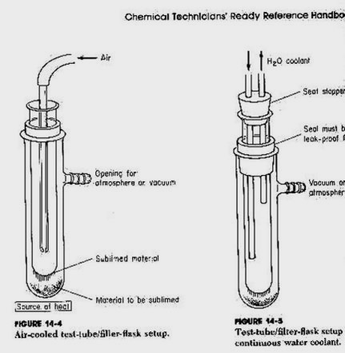
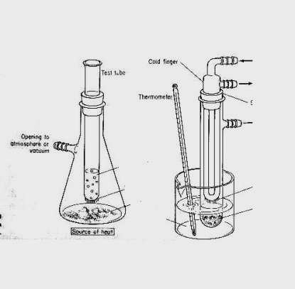

Iodine
Obtaining iodine
Crystal iodine - Sublimated flat flakes of dry iodine I2, ready to
weigh out and use.
-
Local Chemical supply houses.
-
Mail order from chemical suppliers, if you have a business you can order
it. $60 /pound
-
Feed and tack stores in rural areas. Horses get a hoof fungus called "thrush"
from hanging out in stalls which are wet.
-
It is used in sheep dip. At the feed and tack you ask for "horse
hoof" or "Iodine"
-
Purification of water, there is a Y2K product marketed at some pool suppliers
, and out Camping, Boating, Outdoors backpacking type places for
purifying drinking water the price is more expensive this way.
-
They are required to take your ID information. and ask what it is to be
used for
-
In many places you may buy up to 8 ounces /person/ 30 days
-
It is important to find buyers, to keep your name off those ID lists
-
Many people are willing to make the purchase for you if you give them a
little stash and perhaps a bit of cash. Just don't spoil them. The cost
is around $50 for 8 ounces.
Bilbo writes
I am fortunate regarding the I2 I live in Cow Country its no biggee
at all to buy it and lots of it.
If I could throw something in to the mix here, when purchasing the
I2 from the feed/tackle store, ask the rep about it quite casually. "My
quarter horse has a big black rotten hole in its hoof, the vet/farrier
told me some iodine crystal packed in the thrush hole would burn it out.
How exactly do I apply it?" or something to the like. Reps have mundane
shitty jobs and a chance to impart some of their wisdom is always well
received.
If you are walking in semi dumb up front chances are you won't be grilled
about intended purpose at all.
The straight iodine poultice is considered out of date medicine, many
now go with bleach solutions because there are certain contraindications
that can be suffered by the animal due to iodine exposure.
If the sales rep mentions this it will be important that you say the
vet said the thrush is so
advanced if not treated right away and drastically the animal could
suffer lameness**
Failing all of this like Worlock said in another thread.. mail order
$45/pound
The shortest distance between two points is a straight line! (just
make sure a trusted friend is the second point of that line)
Luck
Bilbo
Polar pure iodine - looks like small bee bee's used to purify water,
this works great.

Converting iodine tincture
Tincture of iodine is iodide salts in alcohol, it is found in supermarkets
in small one ounce bottles. Each bottle can generate a little over a gram
of I2 the price has shot up from 0 .60 cents to $1.80 / bottle. Tincture
comes in 2% or 7%.
It is also available at feed and tack stores in pints and gallons.
Mail order through horse breeders supply magazines.
Safety #2
When making Iodine from tincture , eye protection,
gas mask,
Formula one
1 pint 7% tincture iodine
3 pints of hydrogen peroxide
2 oz of HCl
1/2 cup of d-H20
MISSING IMAGE : LINE6.GIF
Shake it up, in a one gallon jug,
Wait 20 minutes
Filter through a pantyhose
Wring out fluids.
Put iodine crystals in a glass jar,
Re-wash four times with distilled water, cover, shake, pour off
the water into a filter
On the final water wash, wash the iodine into a into a fresh filter,
Wring it out hard,
Open up filter roll into a dry filter
Wring out hard
Put crystals in a dark place to dry.
Use a Drying agent like Calcium Chloride store with the I2 in
a sealed chamber
Grocery stores, for mildew prevention near the moth balls
I2 is light sensitive and will degrade.
When completely dry store in light resistant container..
Formula 2
4 part Lab Procedure as follows.
materials
1) 1000 ml 2% Iodine tincture = 2.5%I+2.5%KI in etOH
and H2O =-
2) 250 ml Muriatic acid = 34.4%HCl
3) 475 ml Hydrogen peroxide = 3% solution of H2O2
4) 1750ml Distilled H2O
In a 1 gallon container (plastic or glass),
mix 1 liter of 2% tincture of iodine
with 250 ml of Muriatic acid
stir and allow to sit for 15 min.
Add 475ml of a 3% hydrogen peroxide
stir and let sit an additional 15 min.
Add 1750 ml distilled H2O
shake and let sit for 15 min more.
An orange water layer appears on top of a dark gray layer of I2.
Pour off most of the the orange water
Add fresh distilled H2O shake and let sit
Pour off most of the the orange water
Wash a total of three times with distilled water
On the last wash pour the I2 into a stack of 5 coffee filters
Wring it dry
roll the iodine ball into 5 dry coffee filters
Wring it dry
Roll it into 5 more dry filters
wring it dry
Put the I2 in a small clean glass jar break up the iodine ball
place the jar of I2 on a piece of cardboard, cover the I2 with
a larger jar
put in freezer for several hours
Remove jar of I2, seal it tight, with cellophane
then screw on the cap store it in a dark cool environment
Mothballs
Amazing that someone would catch moths and put their balls in a box
to sell?
Potential problems Not rinsing the
I2 enough with water to remove the chlorine and salts from the tincture
Not drying the I2 out enough and adding it too wet to your reaction. If
in doubt at all re-wash the iodine with distilled water in a filter and
wring out, The iodine is only very slightly soluble in water, you lose
very little washing with water. If it is not clean and dry you can lose
a lot more in a failed reaction.
The Solution
There are only three chemicals involved in the reaction, make sure
they are top notch and your OK
1. Ephedrine - the free base reacts stronger than the HCl
salt
2. Iodine - use more if you are not getting a reaction
1(E)
: 2(I2)
3. Phosphorus- use more if doing a small amount
1(E) : 0.8(RP)
It hurts to see a couple of hundred dollars in chemicals
go to pieces in front of your eyes..
So do not get fiendish and attempt a flawed batch, think first, before
acting rashly
Sublimating Iodine-

Cold Finger - used to sublimate iodine from a flask. Is the way
to purify your Iodine crystals.
The theory is that as iodine is heated it skips from a solid to a gas
when cooled it returns from the gas directly back to a solid.
Several test tubes are used. When one becomes damp from moisture, it
can quickly be replaced,
preventing water vapor from messing up your crystals.
Acetone and dry ice are used for the real cold finger you may need
This device using the flask and test tube is one method. A bowl and
a plate do not allow you to easily chill ,collect, deal with water condensation,
protect against iodine vapor escape, or add more iodine to be sublimated
Red Phosphorous
Red Phosphorous
The Role of Phosphorus in Industry
There are seemingly countless uses for phosphorus and phosphorus compounds
in industry. By far the most important of them is in the manufacture of
fertilizers, a practice which uses up over half of the phosphate rock consumed
in the U.S. About 15% of the phosphorus equivalent in phosphate rock utilized
in the U.S. is converted into elemental phosphorus, the majority of which
is used to produce phosphoric acid. In addition, some of this elemental
phosphorus is used for a variety of military applications as well as in
roach and rodent poisons. Red phosphorus, of course, is used to
produce wooden and paper safety matches, where it is applied to the abrasive
surface upon which the safety match is scratched. It is also used in
the manufacture of fireworks.
Phosphates, especially polyphosphates, "are truly chemicals of universal
application." [11] They have been used in baking powder, carbonated beverages,
dental materials, dentifrice, detergents, fertilizers, fire resistant textiles,
laundering, metal surface treatment (rust proofing), milk and milk products
and water treatment, to name a few. 11 Phosphoric acid is used to flavor
soft drinks, to defecate and clarify sugar, to manufacture gelatin, and
to prevent spoiling in silage. It is also employed in the electropolishing
of stainless steel and aluminum, as well as in other metal treatment applications.
Finally, among other things, phosphoric acid has applications in the textile
industry, in glass manufacture, in the purification of hydrogen peroxide
and in a host of laboratory applications.
Taken from the 1993 Aldrich catalog handbook
| CAS |
Compound |
Descrip |
Amount |
Price |
| 7664-38-2, |
Phosphoric Acid |
85% soln. water ACS |
500 g |
$ 12.90 |
| 1359-36-2, |
Phosphorous Acid |
99% |
500 g |
$ 19.40 |
| 7723-14-0 |
White Phosphorus |
99+% in water |
100g |
$ 71.50 |
| 7723-14-0 |
Red Phosphorus lump |
99.999% |
25 g |
139.00 |
| 7723-14-0 |
Red Phosphorus powder |
99% |
500 g |
$ 23.80 |
| 1314-56-3 |
Phosphorus pentoxide |
98+% ACS Reagent |
500g |
$ 25.80 |
| 6303-21-5 |
Hypophosphorus Acid |
50% wt. soln. in water |
500g |
$ 26.40 |
It is not illegal, in all states but it is watched just like Iodine
and large amounts of ephedrine.
Get some and you will always have some, not much gets used up,
it does become coated with organics
you can clean those off easy. You can re-use it over and over again.
No, you cannot get it out of picture tubes on TVs
Yes, you can get it off match strikers
Yes, you can get it from road flare strikers
Yes you can walk into a Chem. supply house and buy 4 oz for $50
Yes you can mail order it to your business for very much cheaper. $95
for 2 kilos
Yes it is found in fireworks
If you can get over this hurdle your headin' for the finish line.
Ask, beg, or buy the information on where to get it for it from anyone
you can, you will get some.
It is out there, others do it so can you. Keep after it, eventually
someone will tell you where to get it.
Amorphous Red Phosphorus 99.5% pure,
Help out a dealer, ask him to ask the cook where to get it. No one
wants to tell, it is a secret.,
I once had someone walk into a Lab supplier and buy 4 oz. Now some
people bring me kilos every now and then
Mail order from on the web, check the posts in the hive
Cleaning Red Phosphorous
This is a proven, no BS procedure for cleaning up RP. This is
not the procedure used to get the RP off of match strikers.
The use of Sulfuric acid and/or Hydrochloric acid is recommended
only in severe cases if nothing else will work.
What happens to the RP,? Some gets oxidized in the reaction and
is gone. Most will get a waxy build up after a few uses,
It gets course and grainy because the powdery stuff, is what
reacts the best, large surface area for a small volume.
Screen
Run it through a fine stainless steel screen, (kitchen utensil
- grocery store) to remove debris, and breakup chunks
Acetone
put the RP in a funnel with coffee filter pour
acetone through it until the acetone is a light yellow
Solvents
Any of the following familiar solvents have been safely used to wash
the RP
methanol, ethanol, denatured alcohol , isopropynol, toluene , xylene
Rinse with acetone again to remove non-polar solvents
Water
Final Washes with warm or hot distilled water
Sulfuric acid wash (rarely needed)
If the RP still has an abnormal coating
Soak in warm dilute H2SO4 10 minutes
Add equal amount of HCl for 10 minutes
let settle
pour off the acid
repeat until clean
repeat the Acetone and water washes
Dry it
An oven at 150 F to 200 F just barely on,
I have had the glass bowl break while baking 1/4 pound of RP
in the oven , the RP was fortunately still wet , it started to smolder
about 15 minutes later the house was full of smoke.
Threw the towel on it , that slowed it down, pumped two large
fire extinguishers into it with no effect , secured the garden hose and
with wet towel finally put it out, began the clean up and there was still
areas on fire, the extinguishers ruined the RP and made a nasty mess
Screen and powder
Usually screening it will be is enough ,
Powder with mortar and pestle
References:
1. Latimer, W.M. The Oxidations States of the Elements and Their Potentials
in Aqueous Solution. Prentice-Hall, Inc. New York, N.Y., 1952. 105-112.
2. Bard, A.J., et. al., eds. Standard Potentials in Aqueous Solution.
Marcel Dekker. New York, N.Y., 1985. 139-161.
3. Frost, Arthur A. J. Am. Chem. Soc., 73, 2680-2682. 1951.
4. Wagman, E.D., et. al., eds. The NBS Tables of Chemical Thermodynamic
Properties. v. 11. American Chemical Society. Washington, D.C., 1982. 2-38,
2-74 and 2-75.
5. Gould, E.S. Inorganic Reactions and Structure. Holt, Rinehart and
Winston, Inc. New York, N.Y. 1962. 249-257.
6. Weast, R.C., ed. CRC Handbook of Chemistry and Physics. 70th ed.
CRC Press, Inc. Boca Raton, F.L. B113.
7. Sillen, L.G. Stability Constants of Metal-Ion Complexes: Inorganic
Ligands. Burlington House, London. 1964. 179-203.
8. Jolly, W.J. The Chemistry of the Non-Metals. Prentice-Hall, Inc.
Englewood Cliffs, N.J. 1966. 89-106.
9. Hayward, P. and D. Yost. J. Am. Chem. Soc., 71, 915 (1949).
10. Nyquist, R.A., C.C. Putzig and M.A. Leugers. Infrared and Raman
Atlas of Inorganic Compounds and Organic Salts. Academic Press. San Diego,
C.A., 1997. 206 and 209.
11. Standen, Anthony, et. al, eds. The Kirk-Othmer Encyclopedia of
Chemical Technology, 2nd ed. v. 15. John Wiley and Sons, Inc. New York,
N.Y. 1968. 269-70 and 290-92.